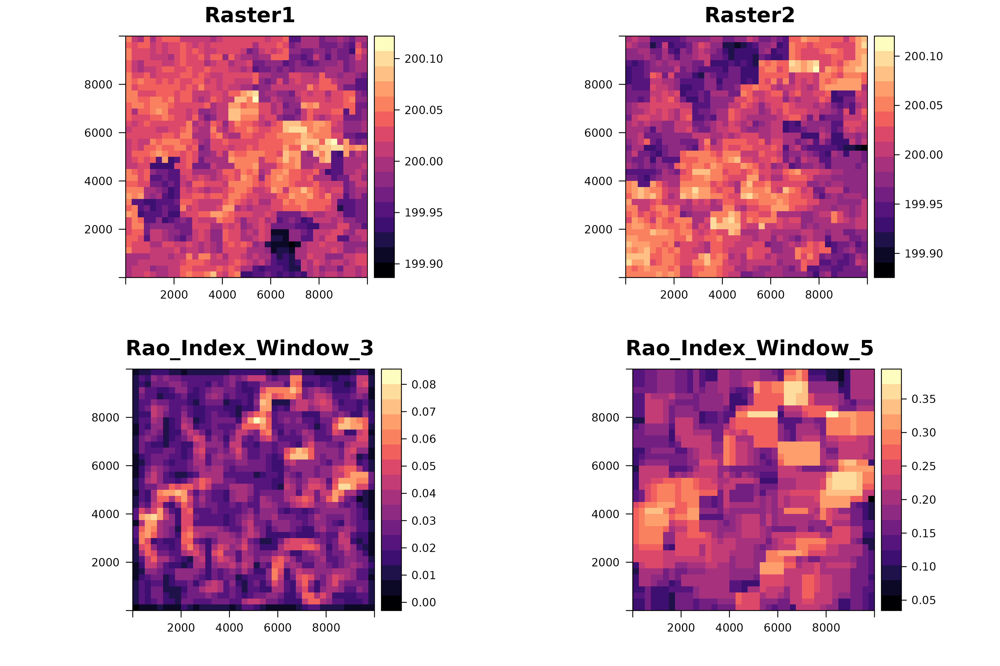

Multidimension Rao's Index.
Matteo Marcantonio, Daniele da Re, Duccio Rocchini
2024-04-16
Source:vignettes/rasterdiv_03_Advanced_multidimension_Rao.Rmd
rasterdiv_03_Advanced_multidimension_Rao.RmdOverview
In this vignette, we demonstrate how to compute the multidimensional Rao’s Index using rasterdiv for multiple numerical matrices, represented as spatially autocorrelated SpatRaster objects.
Creating Autocorrelated Spatial Patterns
First, we establish a grid that will be used to create spatial patterns through a semivariogram model.
gridDim <- 40
xy <- expand.grid(x=1:gridDim, y=1:gridDim)Next, we define a semivariogram and use it to simulate autocorrelated spatial data.
varioMod <- vgm(psill=0.005, range=100, model='Exp')
zDummy <- gstat(formula=z~1, locations = ~x+y, dummy=TRUE, beta=200, model=varioMod, nmax=1)
set.seed(123)
xyz <- predict(zDummy, newdata=xy, nsim=2)With the simulated data, we then create two SpatRaster objects that could represent environmental conditions like plant functional traits.
# Define coordinate reference system
utm32N <- "+proj=utm +zone=32 +ellps=WGS84 +datum=WGS84 +units=m +no_defs"
# Create SpatRasters
r <- terra::rast(nrow=40, ncol=40, crs=utm32N, ext=ext(0,10000, 0,10000))
r1 <- r
# Populate with simulated values
values(r) <- xyz$sim1
values(r1) <- xyz$sim2Computing Multidimensional Rao’s Index
We now calculate the multidimensional Rao’s Index using varying window sizes and alpha values.
mRao <- paRao(x=list(r, r1), window=c(3, 5), alpha=c(1, Inf), na.tolerance=1, method="multidimension", simplify=3)The output is a nested list of SpatRaster which we can transform in a stack of SpatRaster and plotted together with the input layers, as follows:
Visualisation of the result
# Create a list of all the rasters to plot
rasters_to_plot <- c(r, r1, mRao[[1]]$alpha.1, mRao[[2]]$alpha.Inf)
names(rasters_to_plot) <- c("Raster1", "Raster2", "Rao_Index_Window_3", "Rao_Index_Window_5")
# Use lapply to create a list of levelplots
plots_list <- lapply(rasters_to_plot, function(rst) {
levelplot(rst, margin=FALSE,
col.regions=magma(100),
main=list(label=names(rst),
cex=1.5))
})
# Arrange the plots in a grid
do.call(gridExtra::grid.arrange, c(plots_list, ncol = 2))